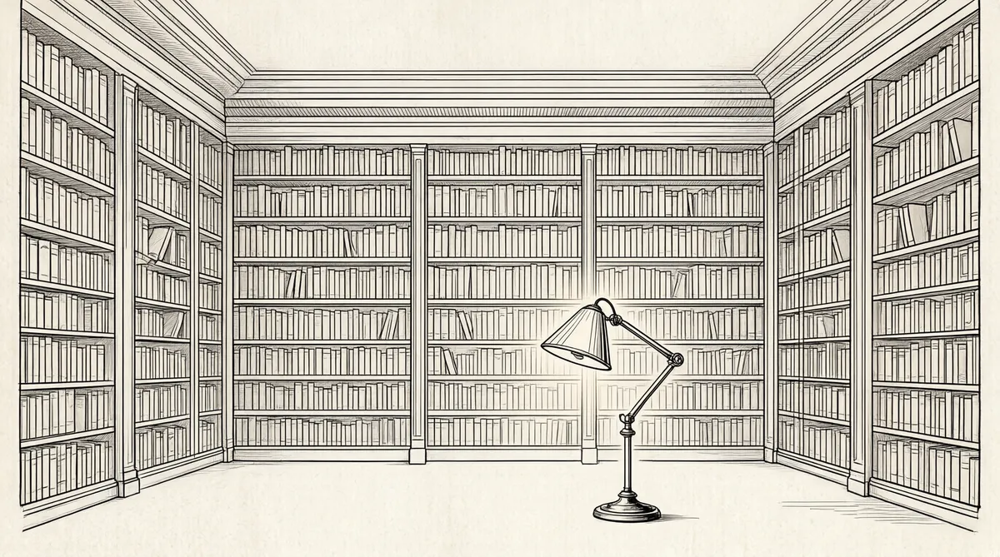

第54章 一个分号

巴菲特在自己的办公室开始了千禧年第一周的工作。伦敦《星期日泰晤士报》在千禧年第一期中这样写道：“巴菲特一直不关注科技行业的作风似乎让自己陷入了一种尴尬的局面。”1这一天巴菲特读到的第一封邮件是通用再保险公司的首席执行官罗恩·弗格森发来的电子邮件。
巴菲特现在精神抖擞。到目前为止，通用再保险公司给他带来的没有别的，只是一些糟糕的负面消息。一年前，就在伯克希尔收购通用再保险公司短短几周的时候，通用再保险公司就承认在尤尼卡文公司诈骗案中受害，弗格森作了坦白交代。电影制片方和出资方说服通用再保险公司担保好莱坞电影的票房，通用再保险公司承诺如果票房未达到预期目标就进行补偿，而公司却不知道上映什么影片，更不知道有哪位明星出演。发现这一切后，巴菲特简直不敢相信自己的眼睛。几周之内，在票房失败的电影的片尾致谢名单还没有出现在观众眼前时，电影经济惨败引起的诉讼就已经纷至沓来。巴菲特很想说他最看重的经理、聪明的阿吉特·贾殷，一定不会对那些索然无味的影片做担保，但这一切却已经发生了。
接着，关于如何承保阿吉特推出的再保险Grab.com在线大奖项目的问题，弗格森又给了巴菲特很大的打击。巴菲特发现弗格森与自己有着截然不同的哲学观。巴菲特一直坚持这样的观点：宁愿轻松跨过眼前1英尺高的跨栏，也不愿伺机等待出现7英尺高的跨栏才大步攀越障碍。Grab.com大奖活动可以轻松带来利润——是可以轻松跨越的1英尺高的跨栏。2弗格森却对此不屑一顾，因为这项业务要经过一点点的积累取得利润。他说通用再保险公司只接有承保利益的业务。
巴菲特很快结束了弗格森安排的这场是非角逐，继而决心进行一次管理变革。然而，他没有付诸行动——没有什么理由促使他这么做。通用再保险公司以往的记录一直很好。公司需要的只是完善，而不是彻底整顿。在收购通用再保险公司之后短短的时间内解雇弗格森会引起不小的骚动，况且他讨厌解雇员工。
Grab.com大奖活动结束两个月后，千禧年随之到来，弗格森承认不良保险定价导致通用再保险公司亏损2.73亿美元。巴菲特对此无比惊讶，再不能认为这一切只是个别错误了——这显然是不小的麻烦。从他宣布收购通用再保险公司的那一刻起，这个该死的公司就像中了邪一样。加入伯克希尔–哈撒韦的头12个月，通用再保险公司——一度堪称制度典范的公司——就一落千丈，保险业务、定价机制和风险选择带来的损失近15亿美元。巴菲特旗下还没有哪个公司曾经有过这样的损失，连这一巨额数字的零头那么大的损失都不曾有过。巴菲特没有多说什么，但他清楚自己必须尽快采取行动了。
消息传出，投资者们很快开始重新审视自己的观点。难道出资220亿美元收购通用再保险公司是伯克希尔–哈撒韦的一个错误？巴菲特的名声再度遭受打击。
与此同时，可口可乐公司尽管在管理方面作了调整，但情况依然不容乐观。3可口可乐新上任的首席执行官道格·达夫特首先在1月裁员6000人，投资者对此惊叹不已。华尔街只有少数人一直声称可口可乐的利润已经开始上升，而投资者却不相信这些说法。所以，可口可乐的股票依然萎靡不振，而1月1日已经跌到56100美元的伯克希尔–哈撒韦的股价也随之下跌。
两周后的2月9日一早，巴菲特坐在办公室浏览手头的报纸，不时看两眼CNBC的电视节目。这时办公桌后面书柜上的专用热线电话响了——只有巴菲特本人能接听该电话。他很快拿起话筒。电话是吉姆–马圭尔打来的，他在纽约股票交易所负责伯克希尔–哈撒韦股票的交易。谈话非常简短：
“嗯……嗯……好的，嗯……现在不。好，嗯……嗯……好，谢谢。”
马圭尔打电话告诉巴菲特伯克希尔–哈撒韦股票的卖单纷至沓来。就在前一天晚上，巴菲特在线玩儿桥牌的时候，雅虎网站的网络BBS写手以“zx1675”为代码发帖称“沃伦住院——病情危急”。接下来的短短几小时内，谣言像病毒一样通过论坛迅速扩散。“巴菲特年老体衰，抛售。”“抛售、抛售、抛售、抛售、抛售。”谣言传遍了华尔街，所有人都认为巴菲特确实住院了，而且病情危急。于是人们看到伯克希尔–哈撒韦股票的成交量巨大，股价急剧下跌。4
巴菲特的个人电话响个不停，那是一个电话频繁响起的早晨。巴菲特像往常一样亲自接听，面带笑容拿起话筒：“嗯，嗨……”对方可以感受到他愉快的心情。
“你怎么样啊？”电话那头开始询问，语气有些急促。
“很好啊……好极了！”
如果龙卷风直袭基威特大厦，巴菲特也会在提到这场灾难的时候说情况“好极了”。人们知道去领会他的言外之意，不过这次似乎有些沉重。整个上午，打电话进来的人都想知道——他到底怎么样？
巴菲特向人们解释说一切都很好——真的很好。但是从伯克希尔–哈撒韦股票的交易情况判断，人们还是听信了谣言。这就是新媒体的力量。随着巴菲特即将辞世的谣言广为散布，伯克希尔–哈撒韦的股价一路下滑，股东们纷纷致电经纪人，要求明确巴菲特是否活着。认识巴菲特的人纷纷接到朋友们的拷问：“你确定？你见到他了？你凭什么这么确定？”
CNBC报道了巴菲特可能辞世的谣言，巴菲特出面辟谣结果导致了新的谣言。怀疑论者开始发言——如果他说自己很好，那一定是不好。还有人说巴菲特在借机低价买进伯克希尔–哈撒韦的股票，而这一谣言触痛了巴菲特的软肋：正直的名声和贪婪的作风直接碰撞。
两天来攻击不断，伯克希尔–哈撒韦的股价下滑突破5%，人们都认为巴菲特责无旁贷。谣言给巴菲特带来一种反面的恭维，而让巴菲特盛怒的是人们都认为他在欺骗股东，编造谎言低价骗取股东花钱购买股票。他讨厌一些人通过互联网操纵股票价格、进行敲诈勒索的行径，更不能容忍自己成为众矢之的。想到自己做出回应会引出更多谣言（并因此创下回应谣言的先例），他就非常沮丧。
巴菲特选择了理性面对：谣言终究是谣言，最后一定会不攻自破。然而，“最后”可能要在很长时间之后才能发生。与此同时，出现了一个新的现实问题：在互联网统治的时代，他越来越无法控制自己的公众认知度。后来，他让步了，发布了惊人的新闻。
近来，互联网上出现了关于股票回购和巴菲特先生健康状况的谣言。尽管伯克希尔–哈撒韦一贯奉行不对谣言进行评论的作风，但是对于近日流传的谣言我们还是决定破例。所有关于股票回购和巴菲特先生健康状况的谣言“百分之百都是假的”。5
这样的声明毫无用处。伯克希尔–哈撒韦的股价就在那一周猛跌11%，根本没有恢复。
3月9日，《纽约日报》引用了《科技投资人杂志》发行人哈里·牛顿的话：“我告诉大家沃伦·巴菲特在写给股东的信中应该怎么讲，‘我很抱歉！’这就是他必须讲的。”次日，伯克希尔–哈撒韦的股价跌至每股41300美元，这一交易价格几乎比该公司上市以来的最低价格没高多少。传奇般的“巴菲特保险”——人们认为仅仅因巴菲特本人的影响而高价交易的股票——已成历史。在此前一天，纳斯达克指数上扬至5000点，与1999年1月以来相比翻了一番，其成份股股票增长超过3万亿美元。
这样的鲜明对比不会不吸引人们的注意。一位资金经理写道，像巴菲特这样的投资者就是“堕落天使，落后的排名让他们感到耻辱……1999年，一些标新立异者声称旧的投资理念已被推翻，他们以令人咋舌的数字来证实他们的理论，‘堕落天使’在这些标新立异者眼里早已落伍”。6
巴菲特对这样的恶意攻击深恶痛绝，尽管他从来没有想过要改变自己的投资策略。伯克希尔–哈撒韦的股东们显然在5年前选择市场指标股会得到更好的投资回报——过去5年是伯克希尔–哈撒韦历史上持续“干旱”的艰苦岁月。巴菲特在可口可乐公司的投资现在只能卖得87.5亿美元，而此前曾一度上涨到175亿美元。他决心不偏离安全边际，这意味着伯克希尔–哈撒韦的闲置资本已高达几十亿美元，而这些闲置资本就是回报很低的债券。巴菲特对电脑的基本操作非常熟悉，但是他没有考虑买进任何价位的科技股票。“提到微软和英特尔，”他说，“我不知道它们在10年后会是什么样子，也不希望参与别人占优势的领域……软件行业不在我的能力范围之内……我了解的是Dilly棒棒糖，而不是软件。”7
2000年2月，美国证券交易委员会拒绝了伯克希尔–哈撒韦提出的对其部分持有股份保密的要求。美国证券交易委员会权衡了稳定市场中投资者的各种利益和知情权，最后决定支持其享有知情权。在人们通过巴菲特的股票获利之前，巴菲特不能进行大量囤积，他只能像美国运通公司或可口可乐公司那样，聚集少量股票。尽管巴菲特一再坚持股份保密，美国证券交易委员会还是将其视为本杰明·格雷厄姆式的人物，要其向全世界公开股票记录。从此，整体收购——巴菲特一直最喜欢的投资方式——成为伯克希尔–哈撒韦主要的投资方向。此后将大量资金投入股市运作将越来越难。媒体称巴菲特为“过去的全球最伟大的投资人”，令人痛心。8
3月10日，在哈里·牛顿提出巴菲特应该道歉的第二天，《华尔街日报》这样写道：人人都通过科技股票赚钱，只有顽固而吝啬的巴菲特不在其中，他的股票已经下跌48%。9《华尔街日报》引用了一位投资组合上涨35%的AT&T退休员工的话，他说这只科技股票的投资人“确实不是沃伦·巴菲特——谢天谢地”。10
巴菲特在职业生涯中从来没有像这三年那样认真思考自己所经受的考验。市场的一切迹象都表明他错了。由于他固执地坚持一套陈旧的观点，公众、媒体甚至公司的一些股东都认为他思想僵化了。只有他内心清楚自己的方向和强烈的渴望。多年来他已习惯一直享有诸多荣誉，就像每天都要喝樱桃可乐一般；他对公众的批评非常敏感，所以他避开一切抛头露面的机会；他在生活中努力捍卫自己的名誉，对抗玷污自己名誉的任何事情。
然而，这一次面对名誉的攻击，巴菲特一直没有做出反抗。他既没有写评论，也没有在国会面前论证市场的危险，更没有通过报纸斗争抑或通过电视采访节目、请代理人保护自己。他和芒格照旧与伯克希尔–哈撒韦的股东定期沟通，对股东们说在人们过度高估市场的情况下，谁也无法预料这种局面会持续多久。最后，不是作为正式发言，而是出于警示和告诫，巴菲特在太阳谷年会中对各界精英进行的精辟演讲中作了唯一一次解释——他预测未来20年中市场低落的程度远远不是投资者可以想象的。不久他的这番演讲刊登在《财富》上，在街头巷尾传播。
消除恐惧心理，请求尼克·布雷迪帮助拯救所罗门公司需要极大的勇气。而面对多年的批评和奚落表现出如此的克制力、提出这样的预言，更需要一种非同寻常的勇气。网络泡沫成为巴菲特职业生涯中最大的个人挑战。
3月11日，就在《华尔街日报》发表AT&T退休员工在投资方面都胜过沃伦·巴菲特的文章24小时之后，伯克希尔–哈撒韦公布了年度报告，因伯克希尔–哈撒韦的投资失败，巴菲特给自己的工作打分只是一个“D”。但是，他没有说他认为避开科技股票是一个错误，他只是重新调整了投资者的期望——由于伯克希尔–哈撒韦规模庞大，目前在股价方面的增长可能只是“略”高于市场。他知道这样会引起关于“略”的意义的争论，但是他认为必须这么讲。
另外，巴菲特宣布由于伯克希尔–哈撒韦当时股价低廉，伯克希尔–哈撒韦愿意按照投资者的出价买进公司的股票。这样一来——就可以把资金返还给几十年都没有得到分红的股东们。提到这一点——似乎向来贪财如命的巴菲特突然变得清心寡欲了。
这是巴菲特第二次公开宣布他愿意在市场上买进股票。1970年他第一次宣布“我愿意购置伯克希尔–哈撒韦的股票”，大力扭转了该公司的局面。投资者必须再次决定支持哪一方。这一次，许多人理解了巴菲特传达的信息。巴菲特愿意购买伯克希尔–哈撒韦的股票这样的发言本身就促使伯克希尔–哈撒韦的股价上涨了24%，而他还没有来得及购买一股股票。
接下来的一周，纳斯达克股票的技术股出现了崩盘的迹象。11到4月末，技术股的市值蒸发了31%，从历史的角度看，这次可以说是最严重的崩盘之一了。
复活节那天巴菲特没有一点儿心情，就在这一天他备受病痛折磨。他简直不能相信，就在非常重要的股东大会之前这一对他来讲最关键的时刻，关于他健康状况的谣言居然应验了。女儿苏茜在凌晨3点匆忙把他送到医院，接下来的几天他在医院一直接受排除肾结石的治疗。护士们进进出出都叫他比尔。尽管忍受着不堪言状的痛苦，他还是想知道股票市场的情况。他在病痛中不断给苏珊打电话。当时苏珊远在科罗拉多州的格兰德莱克，和一群中学时的女同学在一起；一点儿都帮不上巴菲特。12后来，巴菲特感觉好一些的时候，医生就安排他回家了。女儿来接他的时候，他说护士们一直叫他“比尔”是因为他挂号入院的时候用了汤普森博士的名字。
巴菲特还没迈进家门，就又不得不立即返回医院——还是因为可恶的肾结石排除治疗。又一次，他一晚上坐着一杯接一杯地喝水，然后忍受痛苦的折磨。此后，过去不曾困扰他的手术问题开始让他担忧了，因为肾结石会复发。“浑身插满管子——我讨厌那样。那是人们衰老的时候才会遇到的问题。”他说。
他盘点了自己面临的问题。股票声誉扫地，直到他决定自己出价回购才挽回了局面。最大的业务——通用再保险公司似乎中了邪。可口可乐的麻烦也挥之不去。可口可乐——一个如此强大的品牌怎么会在短时间内遭受这样的破坏呢？难道真的是那个可怜的艾华士的错误？而现在巴菲特的健康问题也开始成为不容忽视的事实。
人生总有一死的事实深深地藏在巴菲特“浴缸”记忆的深处，不时悄悄浮出水面。13他依然不能面对父亲的去世，而且一直没有找到合适的方式来纪念父亲霍华德。他把霍华德的大幅肖像挂在自己办公桌后面的墙上，让父亲出现在自己的头顶上方。霍华德生前的手稿都堆放在家里的地下室，丝毫未动。沃伦一直没有勇气亲自翻阅这些手稿。就是想到这些事情都会让他备受折磨，显然他害怕自己抑制了35年的情感爆发。
他告诫人们参天大树只是一个比喻，某一时刻一切都会终结。然而他自己却不能面对事业的巅峰坦然地说：“就这样了，我的工作完成了。西斯廷教堂完工了，不再需要任何勾勒——再多努力也只是平庸之作了。”
他现在69岁，但是他不相信这个事实，依然认为自己是年轻人。在自己还没有到母亲去世的年龄之前，他将一直以自己几十年来积累的知识作为一种自我安慰。通用再保险公司的局势一定会好转，而且他知道火腿三明治一定会推动可口可乐的销售。肾结石……唉！“浴缸”记忆发挥了作用，他开始准备股东大会，而这是他一年中最幸福的一周。
4月末的最后几天，奥马哈城开始热闹起来，机场异常繁忙，人们三三两两、成群结队地在酒店大堂登记入住，城区餐厅所设的室外咖啡座挤满了顾客。租车公司的车辆全部出动。万豪酒店的酒吧——这段时间会见“内部人士”的非正式总部——座无虚席。戴着伯克希尔–哈撒韦大会证件的人在奥马哈城各处散步，仿佛在证明自己是股东大会的成员。巴菲特的办公室里，电话急促地响起，人们都在利用最后的机会争取采访证件、大会通行证或者要求带他们自己的客人参加奥马哈城一年一度的独家盛会——巴菲特的独家星期日早、午餐会。对这些大胆而轻率的要求，巴菲特的秘书戴比·博赞科表面上耐心应答，心里却烦透了，她想直截了当地告诉人们不行。
星期五晚上，巴菲特忙于应付各种公共活动和私人聚会。一些巴菲特的信徒们头戴巨大的黄色宽檐儿牛仔帽和公司的长期股东及顶级资金经理们一起出现在波仙珠宝店的鸡尾酒会中，许多奥马哈人夹杂在外地来的股东们中间，大口吃着免费的食物。波仙珠宝店的苏珊·雅克负责筹划此次活动，因此波仙珠宝店的营业额有了新的突破。巴菲特对活动非常支持，尽管他怀疑有许多前来揩油吃白食的人到场。
在市政礼堂即将召开的股东大会规模盛大，包括几千名员工、供应商和志愿者，到处是大片大片的陈列、鲜花及展示，大会要准备几卡车火鸡三明治、热狗、可乐。这也是安保、媒体、音效、视频、灯光和供应商及志愿者的聚会。所有这一切完全由员工凯莉·马奇莫尔一手策划、编排和监督，巴菲特称凯莉·马奇莫尔是伯克希尔–哈撒韦的“弗洛伦兹·齐格菲尔德”。凯莉连秘书都没有，准确地讲，她本人就是一位秘书。巴菲特自豪地说凯莉一个人可以完成四个人的工作（这样的称赞带来的负面影响就是有时候会让人觉得自己是不是只拿到了应得报酬的1/4）。14不过，巴菲特在用人方面更善于言语奖励，而不是薪资鼓励。工作中与巴菲特接触最多的员工马奇莫尔、博赞科和接待员德布·雷是公司最有代表性的卡内基式的人物，所有的股东都通过巴菲特了解到他们是何等优秀的员工。这些卡内基式的人物就像防晒霜一般，保护公司不受里克肖塞尔的热力学定律的影响。他们自己处理紧张棘手的问题，负责保护老板在走廊尽头安静的办公室里工作，免受外界的各类干扰。在股东大会的前一周，他们都承担着双倍的工作量。在大会当天，德布和戴比应付最重要的VIP客户和新闻中心的相关工作；马奇莫尔带着无线电话各处奔忙，像陆军元帅一般实地指挥。
星期六凌晨4点，几百名兴致勃勃的参会人员脖子上挂着大会通行证纷纷来到市政礼堂外面排队等候入场。3个小时后，保安开始检查入场证件，他们蜂拥而入抢占位置极好的座位。把外套和毛衣挂在椅背上占好座位后，他们会去餐饮区享受免费的早餐，那里有甜甜卷、果汁和咖啡。到8点钟的时候，人们发现根本没有必要在黎明前赶来抢占座位，因为有一多半座位空着。30分钟后，市政礼堂内共有9000人入座。15许多首席执行官对此颇感吃惊（抑或恐惧），去年一共有15000人到场，差别如此之大（参会人员减少了40%）。
按照大会安排，会堂灯光暗了下来，开始放映会前短片（短片一年比一年长）。今年的短片开始出现的卡通人物是扮演成巴菲特的超级英雄，芒格做配角，他们在销售伯克希尔–哈撒韦的产品。接下来，法官朱迪裁定巴菲特和比尔·盖茨之间因为两美元的打赌引起的一场争端——当然只是一个节目而已。随后放映的是伯克希尔–哈撒韦的喜剧录像和广告节目；最后苏珊·巴菲特演唱了一支由可口可乐主题歌改编的伯克希尔–哈撒韦之歌，“世界现在需要什么……伯克希尔–哈撒韦”。
9点半左右，巴菲特和芒格着正装出现在台上，环顾着台下明显少于往年的忠实参会人员：他们穿着各异，有的穿着商务正装，有的穿着短裤，会堂内黄色宽檐儿帽到处移动。5分钟的商业会议之后，像往常一样进入提问阶段，股东们在安放于礼堂各个位置的麦克风前面排起队来，开始询问如何评估股票。有人提到了科技股。“我不希望参与科技股的投机。”巴菲特说，“任何时候爆发投机都会得到纠正。”他将科技市场比作连锁邮件和庞氏骗局一般华而不实的表面富足。“投资者认为自己很富有，其实不然。”他停了一下，接着转身问，“查理？”
芒格开始发言，观众变得活跃起来。芒格通常会说“没有什么补充的”，但是只要巴菲特把麦克风给他，全场氛围就会变得异常紧张起来，就像看着一位老练的驯狮员带着一鞭一椅出现在狮群中一样。
“我们说‘卑劣的放肆’是因为，这样会产生卑劣的结果，是荒谬的。”芒格说，“如果把葡萄干和狗屎混合在一起，那还是狗屎。”
观众开始表现出惊讶。他在说狗屎？芒格居然可以抛开媒体不管，而且面对与父母一同前来的孩子们把网络股票说成是狗屎？他说了狗屎！大会骚动许久才平静下来。
接着有人提到了白银问题。随后人们开始纷纷走向地下商场选购心仪的鞋子、金厨刀具和喜诗糖果。关于巴菲特如何看待白银地位的年度提问已经非常乏味。1997年，巴菲特宣布购买全球1/3的白银。这位“传神谕者”突然倾情白银、放弃收集蓝鹰邮票，激起了贵金属爱好者的狂热情绪。16在伯克希尔–哈撒韦的历史上，这一投资引起了前所未有的关注。巴菲特不是贵金属迷，他只是把贵金属当作自己的生意，根据供求变化进行投资——不是为了投机，也没有将其作为防止通货膨胀的措施。他认为公司的股票价格上涨才是防止通货膨胀的明智措施，尽管通货膨胀会损害公司利益。他购买白银是很好的投资，但是他这样做其实是因为欣赏白银。他这样描述自己：“在隐秘的伦敦地下宫殿中，我面带笑容悉数熠熠发光的白银栏杆。”17白银问题一提出，巴菲特和芒格两人就表现得非常不耐烦，但巴菲特还是出于礼貌回答说拥有白银已经成为一件无趣的事情。他没有提到欣赏白银是非常振奋人心的。
提问单调乏味，巴菲特和芒格一边听，一边剥开Dilly棒棒糖塞进嘴里，打开糖果时发出沙沙的声音。股东们开始抱怨，他们对股票价格表示不满。18一位女士说她接下来要转入函授学校学习了，因为伯克希尔–哈撒韦的股票回报都不够支付大学开支。19来自加利福尼亚州圣巴巴拉的盖洛德·汉森站在麦克风前面大声说，他在1998年伯克希尔–哈撒韦的股票接近最高点时选择买进，就是因为看好巴菲特以往的记录，结果却回报平平，他损失的资金完全可以通过4只科技股挽回。20他力劝巴菲特至少将伯克希尔–哈撒韦资产的10%投资到科技领域。“这是‘人间游戏’，难道您依然不觉得或许应该选择几只科技股吗？”
提问还是关于投资科技股的事情。像选择购买索罗斯科技股的著名资金经理斯坦利·德鲁肯米勒那样开始投资科技股票怎么样？针对伯克希尔–哈撒韦当前让人失望的业绩，巴菲特难道不能找到新的办法吗？如果不选择科技股，他会不会进行一些国际投资呢？
股东大会现场的情景着实令人难堪。面对股东，巴菲特第一次发现他们中间的一些人对他失望了：近50年的努力付诸东流、毁于一旦，股东们都开始反对他了。他的年龄骤然成为老朽落后的象征，而不再是炫耀经验阅历的资本。现在媒体称他是一位老人。似乎世界已经不再需要伯克希尔–哈撒韦。
随后，巴菲特一边签名，一边痛饮樱桃可乐。接着他穿上棒球服来到奥马哈皇家棒球小联盟队，为这里即将举行的棒球比赛开球。他还和阿斯特丽德一道参加了别的一些聚会，依然穿着那套棒球服，一路都在向人们散发Dilly棒棒糖。星期日晚上他和家人在Gorat’s牛排店共进晚餐，而后参加星期一早上召开的董事会会议——又一次身体力行的教学实践。随后，他、苏珊、孩子们及其他家庭成员一道飞往纽约。和许多朋友见面之前，他首先和家人一起外出吃饭、观看各类演出，例行公事般地在波道夫精品百货店选购服装。选购服装是他最不喜欢的年度活动，在这样的时候“浴缸”记忆就会发挥作用。在纽约的时候，他还前往哥伦比亚大学讲授本杰明·格雷厄姆课程的当代版本，会见参加财经新闻课程学习的几位记者。21
星期六一早，他召集通用再保险公司的三位经理到他在广场酒店的套房。罗恩·弗格森带来许多PPT资料，开始一一列数通用再保险公司的糟糕状况。巴菲特皱着眉头、焦虑不安地听了几分钟，终于开口说道：“我们为什么不直接面对结果呢！结果必须有所改善，必须强化交流网络。目前是客户对通用再保险公司发号施令，而不是公司处于主动地位。这种情况必须终结，必须有人承担责任。”22
他差一点儿就说出让弗格森退休，似乎不再对年岁已高的经理人怀有恻隐之心。弗格森在1999年年末曾患有蛛网膜下腔出血，巴菲特非常同情他。后来，弗格森偶尔出现身体不适，无法正常工作，曾提出辞职，但是巴菲特拒绝了他的辞职要求。巴菲特认为不应该让员工因身体不适而被迫退休；他最欣赏的一些经理人都坚持工作到很大年纪，其中B夫人就一直工作到103岁，退休一年后去世。他非常怀念矮小的B夫人性格刁钻的样子，但是也感到一种强烈的解脱，B夫人终究还是没有战胜自己的年龄。他曾经一度担心自己会先于B夫人离开人世，他自己的目标是比B夫人更长寿，不仅仅是多活几年，而是要多活5年以上甚至直到永远。他一直都夸张地讲伯克希尔–哈撒韦的老年员工和董事会准备筹建高龄美国最高法院。
因此，想象一下几周后巴菲特晚饭后在比尔·盖茨的家中打桥牌，他的精灵一直矗立在他肩头保护着他。他说话的时候声音嘶哑，好像前一天晚上根本没有睡觉。他不停地说自己“很好”，但显然是有些不适。沙伦·奥斯伯格从巴菲特当时的样子判断他肯定是身体不舒服，就和盖茨夫妇讲了自己注意到的问题，盖茨夫妇不顾巴菲特的反对很快叫来了医生。23
巴菲特说自己从来没有做过结肠镜检查，这让那位医生非常吃惊。他让巴菲特服用了一粒止痛片，以让他顺利到家，还说巴菲特回到奥马哈后真的应该去医院做一次全面的体检，而且要做结肠镜检查。
精灵可能不够智慧。霍华德·巴菲特就患有结肠癌，因结肠癌的并发症去世。巴菲特现在怎么想呢？69岁了，从来没有做过结肠镜检查？这显然不是把自己的身体当作一生拥有的唯一一辆汽车一般呵护。
一个月后，伯克希尔–哈撒韦的股票每股上涨近5000美元，达6万美元。《财富》杂志写道，尽管巴菲特“没有取得1999年的骄人业绩”，但是伯克希尔–哈撒韦从3月的低谷走出，股价近期上涨47%，这充分表明巴菲特是一位“优秀的复兴者”。24然而，巴菲特还需要完成一些身体康复工作。
巴菲特终于还是安排了令人担忧的体检。25他很少在短期内如此频繁地光顾医院——肾结石排除治疗刚刚在一个月前进行，不过结肠镜检查可以视作“常规”检查。巴菲特通过电话聊天、打桥牌和玩电脑直升机游戏分散自己对体检的担忧。当人们问及这次体检时，他会说：“我根本就不担心会有什么问题。”
但是做完结肠镜检查他傻眼了。他肚子里有一块巨大的良性息肉。息肉过于庞大，要切除就得影响周围大量的其他组织器官。当时有几位朋友在场。这种息肉不是可以任其发展的，巴菲特决定在7月末太阳谷年会过后进行手术。“哦，我一点都不担心。”他一边开玩笑，一边强调自己的心脏检查结果良好，“我从来不担心自己的健康状况。要不是你们提出来，我连想都想不到。”
但是巴菲特必须就自己的健康问题作新闻发布，这次宣布了一些令人尴尬的细节：
沃伦·E·巴菲特，伯克希尔–哈撒韦（NYSE：BRK.A，BRK.B）的董事长，将于下月住进奥马哈医院接受手术，切除结肠中的几块良性息肉。巴菲特先生在周一接受常规体检的时候发现了结肠息肉，这次体检表明他的其他健康状况良好。预计手术需要巴菲特先生住院几天，随后他将尽快返回工作岗位。伯克希尔–哈撒韦宣布相关事实是为了防止出现关于巴菲特先生健康状况的虚假谣言，像今年年初那样影响公司股票的市值。26
手术进行了几个小时，切除了长达15英寸的息肉，在巴菲特肚子上留下了长达7英寸的疤痕。他在家休养一周，生平第一次留了胡子。不去伯克希尔–哈撒韦工作的日子，他喜欢电话聊天。他的声音有些虚弱。
“哦，没有，我一点儿都不累，现在身体非常好。”他说，“体重减少了几磅，也是需要减掉的。阿斯特丽德非常精心地照顾我。医生说我想吃什么都可以吃。还有，我有没有告诉你我入院的时候有一根结肠，但是出院的时候却带着一个分号”问及他是否担心复发时，他说：“哦，不担心，一点儿都不担心。我从来不担心什么事情，这你们都知道。顺便提一句，我有没有告诉你这次手术的麻醉师小时候是我在高尔夫球乡村俱乐部的球童？他对我进行麻醉前，我对他说真的希望当年没有少给他小费。”
伯克希尔–哈撒韦的新闻中只是确认了息肉确实是良性的，不需要进一步治疗。尽管如此，谣言还是又一次通过互联网和华尔街漫延。一些人坚持称巴菲特肯定是得了癌症，息肉不需要做手术的。但是沃伦的病已经好了，而且他不觉得自己已经老了，他依然像“火球”一般充满活力。
一生傲慢的他，终究还是不能摆脱健康问题的困扰。在某一天，他一直坚持的摔跤比赛还是要落幕，一直回避的问题还是必须面对。在巴菲特心里，伯克希尔–哈撒韦是可以替代自己永远生存在这个世界上的，所以一切都没有自己对公司的责任重要。许多问题都将由苏珊来决定，她会比他长寿。他告诉人们苏珊会照顾好一切的。
[1]弗洛伦兹·齐格菲尔德，百老汇最大的歌舞团齐格菲歌舞团的创办人。——译者注
[2]“分号”在英语中是“semicolon”，而结肠的拼写是“colon”，“semi”有“一半”之意，故巴菲特以此幽默地讲述自己经历了这次手术后只剩下半段结肠。——译者注？